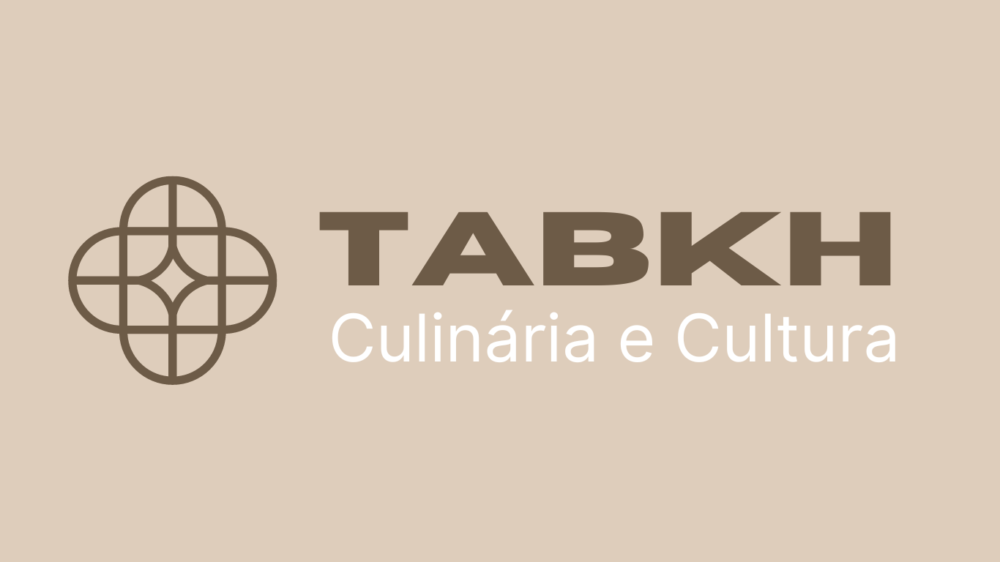
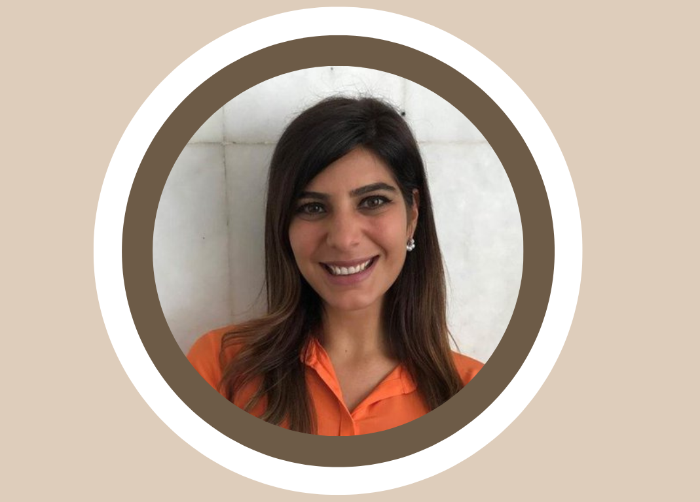

Ahmed Khan Al-Abadi
Ahmed é um cozinheiro árabe que migrou já idoso para São Paulo há alguns anos. Ele trouxe consigo receitas antigas e autênticas de sua família, passadas de geração em geração. Embora inicialmente relutante em deixar sua terra natal, Ahmed decidiu se aventurar em uma nova vida e compartilhar seus talentos culinários com o mundo.
Com sua vasta experiência e paixão pela culinária árabe, Ahmed abriu um pequeno restaurante no centro da cidade, chamado "Casa do Ahmed". Ele selecionou pessoalmente cada ingrediente e especiaria que usa em suas receitas para garantir que a autenticidade e o sabor estejam sempre presentes em cada prato.

Najwa Habbad
Najwa é uma cozinheira árabe apaixonada por sua culinária e cultura. Ela nasceu e cresceu em uma pequena aldeia nas montanhas do Líbano, onde aprendeu a cozinhar com sua mãe e avó desde muito jovem. Najwa sempre sonhou em viajar pelo mundo e compartilhar sua culinária com pessoas de diferentes lugares e culturas.
Em 2010 se mudou para o Rio onde hoje é professora de culinária. As aulas de culinária de Najwa são muito populares entre os moradores do Rio, que amam experimentar novos sabores e aprender sobre outras culturas. Ela ensina pratos tradicionais árabes, como homus, tabule, kibe e kafta, além de receitas mais complexas, como shawarma, falafel e baklava.